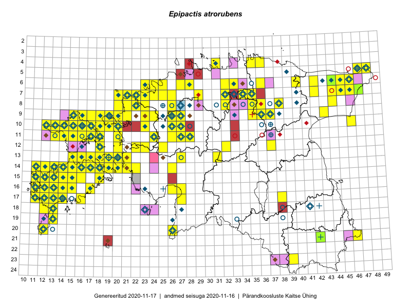

Epipactis atrorubens
Uuendatud: 2016-12-01
Kaardile koondatud taksonid: Epipactis atropurpurea Raf.; Epipactis atrorubens (Hoffm. ex Bernh.) Besser

Kaart põhineb 401 kirjel, neist vaatlusi 400 ja eksemplare 1.
Kuvatud viited 20 esimesele andmebaasikirjele, ülejäänud PlutoFis
- Toomas Kukk, Thea Kull, Timo Luhamäe, Ott Luuk, Peedu Saar: 2015-06-29: 14-17: ala
- Toomas Kukk, Eerik Leibak: 2015-08-09: 14-15: ala
- Toomas Kukk, Eerik Leibak: 2015-08-09: 14-15: GPS punkt
- Toomas Kukk, Eerik Leibak: 2015-08-09: 14-15: GPS punkt
- Toomas Kukk, Eerik Leibak: 2015-08-12: 10-17: ala
- Toomas Kukk, Eerik Leibak: 2015-08-12: 10-17: GPS punkt
- Toomas Kukk, Eerik Leibak: 2015-08-12: 10-17: GPS punkt
- Toomas Kukk, Eerik Leibak: 2015-08-12: 09-17: ala
- Toomas Kukk, Eerik Leibak: 2015-08-12: 09-17: GPS punkt
- Peedu Saar, Liina Oja: 2015-07-23: 07-46: GPS punkt
- Peedu Saar, Liina Oja: 2015-07-23: 07-46: GPS punkt
- Peedu Saar, Elle Roosaluste: 2015-07-12: 13-20: ala
- Toomas Kukk, Eerik Leibak: 2015-08-11: 09-15: ala
- Toomas Kukk, Eerik Leibak: 2015-08-11: 09-15: GPS punkt
- Toomas Kukk, Eerik Leibak: 2015-08-11: 09-15: GPS punkt
- Toomas Kukk, Eerik Leibak: 2015-08-11: 09-15: GPS punkt
- Toomas Kukk, Eerik Leibak: 2015-08-11: 09-16: ala
- Toomas Kukk, Eerik Leibak: 2015-08-11: 09-16: GPS punkt
- Toomas Kukk, Eerik Leibak: 2015-08-11: 09-16: GPS punkt
- Peedu Saar, Sander Laherand: 2015-05-31: 07-47: ala